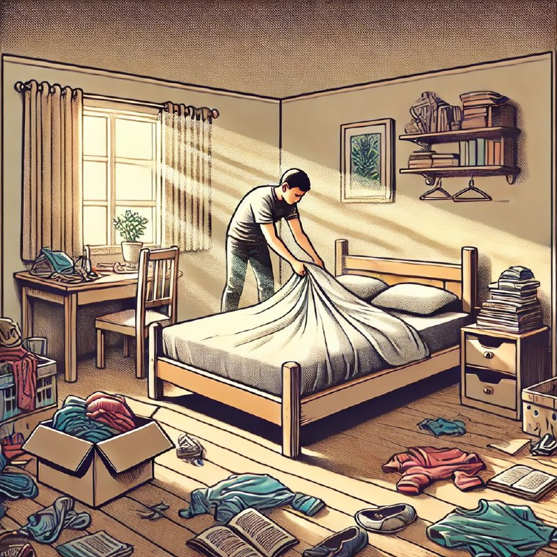

← Барча мақолалар
“Дунёни ўзгартиришни ётган ўрнингни тўғрилашдан бошланг!”— бу иборада чуқур ҳаётий ҳикмат ётади.

Катта ўзгаришлар ва ислоҳотларга интилишдан аввал, инсон аввало ўзидан бошлаши, шахсий тартиби ва атроф-муҳитини яхшилаши лозим.
Биз дунёдаги муаммоларни ҳал қилишга шошилишдан аввал, ўзимиздан бошлашни ўрганишимиз керак. Ҳар бир инсон ўз ҳаётида тартиб ва интизом ўрнатса, бутун жамиятда ҳам ижобий ўзгаришларга эришишга сабабчи бўлади.